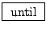
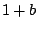
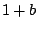

Example F12.paf.pd (Figure 6.18) is a realization of the PAF generator, described in Section 6.4. The control inputs specify the fundamental frequency, the center frequency, and the bandwidth, all in ``MIDI" units. The first steps taken in the realization are to divide center frequency by fundamental (to get the center frequency quotient) and bandwidth by fundamental to get the index of modulation for the waveshaper. The center frequency quotient is sampled-and-held so that it is only updated at periods of the fundamental.
The one oscillator (the phasor~ object) runs at the fundamental frequency. This is used both to control a samphold~ object which synchronizes updates to the center frequency quotient (labeled ``C.F. relative to fundamental" in the figure), and to compute phases for both cos~ objects which operate as shown earlier in Figure 6.17.
The waveshaping portion of the patch uses a half period of a sinusoid as a lookup function (to compensate for the frequency doubling because of the symmetry of the lookup function). To get a half-cycle of the sine function we multiply the phase by 0.5 and subtract 0.25, so that the adjusted phase runs from -0.25 to +0.25, once each period. This scans the positive half of the cycle defined by the cos~ object.
The amplitude of the half-sinusoid is then adjusted by an index of modulation
(which is just the bandwidth quotient
 ). The table
(``bell-curve") holds an unnormalized Gaussian curve sampled
from -4 to 4 over 200 points (25 points per unit), so the center of the table,
at point 100, corresponds to the central peak of the bell curve. Outside the
interval from -4 to 4 the Gaussian curve is negligibly small.
). The table
(``bell-curve") holds an unnormalized Gaussian curve sampled
from -4 to 4 over 200 points (25 points per unit), so the center of the table,
at point 100, corresponds to the central peak of the bell curve. Outside the
interval from -4 to 4 the Gaussian curve is negligibly small.
Figure 6.19 shows how the Gaussian wavetable is prepared. One new control object is needed:
 :
When the left, ``start" inlet is banged, output sequential bangs (with no
elapsed time between them) iteratively, until the right, ``stop" inlet is
banged. The stopping ``bang" message must originate somehow from the
until object's outlet; otherwise, the outlet will send ``bang" messages
forever, freezing out any other object which could break the loop.
As used here, a loop driven by an until object counts from 0 to 199, inclusive. The loop count is maintained by the ``f" and ``+ 1" objects, each of which feeds the other. But since the ``+ 1" object's output goes to the right inlet of the ``f", its result (one greater) will only emerge from the ``f" the next time it is banged by ``until". So each bang from ``until" increments the value by one.
The order in which the loop is started matters: the upper ``t b b" object (short for ``trigger bang bang") must first send zero to the ``f", thus initializing it, and then set the until object sending bangs, incrementing the value, until stopped. To stop it when the value reaches 199, a select object checks the value and, when it sees the match, bangs the ``stop" inlet of the until object.
Meanwhile, for every number from 0 to 199 that comes out of the ``f" object, we create an ordered pair of messages to the tabwrite object. First, at right, goes the index itself, from 0 to 199. Then for the left inlet, the first expr object adjusts the index to range from -4 to 4 (it previously ranged from 0 to 199) and the second one evaluates the Gaussian function.
In this patch we have not fully addressed the issue of updating the center frequency quotient at the appropriate times. Whenever the carrier frequency is changed the sample-and-hold step properly delays the update of the quotient. But if, instead or in addition, the fundamental itself changes abruptly, then for a fraction of a period the phasor~ object's frequency and the quotient are out of sync. Pd does not allow the samphold~ output to be connected back into the phasor~ input without the inclusion of an explicit delay (see the next chapter) and there is no simple way to modify the patch to solve this problem.
Assuming that we did somehow clock the phasor~ object's input synchronously with its own wraparound points, we would then have to do the same for the bandwidth/fundamental quotient on the right side of the patch as well. In the current scenario, however, there is no problem updating that value continuously.
A practical solution to this updating problem could be simply to rewrite the entire patch in C as a Pd class; this also turns out to use much less CPU time than the pictured patch, and is the more practical solution overall--as long as you don't want to experiment with making embellishments or other changes to the algorithm. Such embellishments might include: adding an inharmonic upward or downward shift in the partials; allowing to switch between smooth and sampled-and-held center frequency updates; adding separate gain controls for even and odd partials; introducing gravel by irregularly modulating the phase; allowing mixtures of two or more waveshaping functions; or making sharper percussive attacks by aligning the phase of the oscillator with the timing of an amplitude envelope generator.
One final detail about amplitude is in order: since the amplitude of the
strongest partial decreases roughly as  where
where  is the index of
modulation, it is sometimes (but not always) desirable to correct the amplitude
of the output by multiplying by . This is only an option if
is the index of
modulation, it is sometimes (but not always) desirable to correct the amplitude
of the output by multiplying by . This is only an option if  is
smoothly updated (as in this example), not if it is sampled-and-held.
One situation in which this is appropriate is in simulating plucked strings (by
setting center frequency to the fundamental, starting with a high index of
modulation and dropping it exponentially); it would be appropriate to hear
the fundamental dropping, not rising, in amplitude as the string decays.
is
smoothly updated (as in this example), not if it is sampled-and-held.
One situation in which this is appropriate is in simulating plucked strings (by
setting center frequency to the fundamental, starting with a high index of
modulation and dropping it exponentially); it would be appropriate to hear
the fundamental dropping, not rising, in amplitude as the string decays.